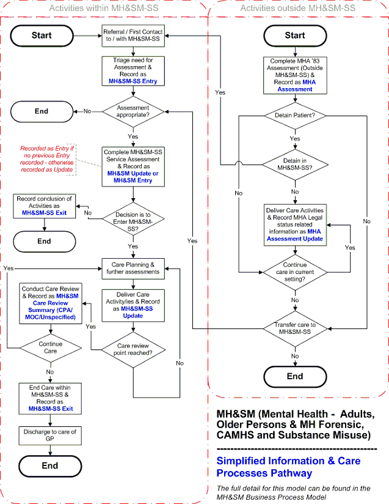

Domain Scoping Document
Draft: v6.0
Domain: Mental Health (MH&SM)
28 February 2008
Amendment History:
|
Version
|
Date
|
Amendment History
|
|
0.1
|
First draft for comment
| |
|
0.2
|
17/9/2004
|
Pre-distribution review
|
|
1.0
|
17/9/2004
|
Approved (identical to v0.2)
|
|
Versions 1.1 & 1.2 were never produced due to version control error thus
1.3 was the next version produced after 1.0
| ||
|
1.3
|
21/03/2005
|
Further Pre-distribution review and amended to include thick message
rather than notifications to GP
|
|
1.4
|
05/04/2005
|
Final tidy-up prior to publishing
|
|
1.5
|
09/05/2005
|
Amended names of Admission & Discharge messages to Entry and Exit.
Status amended to Approved
|
|
2.0
|
09/05/2005
|
Approved
|
|
2.1
|
27/06/2005
|
Updated to include work around Provision of Care messages for Mental
Health. Renaming of the Model to 'Adults, Addiction & Older Persons' to
include any identified requirements for those additional areas
|
|
2.2
|
03/07/2005
|
Inclusion of updates following feedback from the first review of this draft
|
|
3.0
|
11/07/2005
|
Approved
|
|
3.1
|
01/08/2005
|
Draft - addition of Mental Health Care Message and description of MH
usage of other existing PoC messages
|
|
3.2
|
17/11/2005
|
Draft - Major revision to include the use of a single message to cover all MH
specific requirements within MH&SM Specialist Service. This model now
includes Adult, Addictions, CAMHS and Older persons mental health
related specialist services as well as the use of this message outside of
MH&SM Specialist Service for recording of MH specific information as it is
required in other service types
|
|
3.3
|
22/12/2005
|
Draft - Revision to reflect refocusing to more strictly define Domain
business requirements. Cessation of description of 'messages' in
preference to 'communications' and hence withdrawal of message
descriptions made in version 3.2. Also this version includes internal Project
Team review comments.
|
|
4.0
|
22/12/05
|
Approved
|
|
4.1
|
11/07/2006
|
Amends to bring Scoping Document in line with new deliverables and
changes to the Domain
|
|
4.2
|
25/07/06
|
Amends following review
|
|
5.0
|
18/08/06
|
Approved with no changes, relevant administrative details updated.
|
|
6.0
|
28/02/08
|
Amends following to bring the Scoping Document into line for CDA 2008 B
release
|
Forecast Changes:
|
Anticipated Change
|
When
|
|
There are no currently outstanding changes envisaged at this time
|
|
Reviewers:
This document must be reviewed by the following. Indicate any delegation for sign off.
|
Name
|
Signature
|
Title/Responsibility
|
Date
|
Version
|
|
Gavin McIntosh
|
MH Project Manager
|
|||
|
Simon Withey
|
BRT Team - internal reviewer
|
|||
|
Andrew Curry
|
MH Joint Clinical Lead
|
|||
|
Mike Jones
|
MH Joint Clinical Lead
|
|||
|
Bob Cox
|
Senior Business Analyst
|
Approvals:
This document requires the following approvals:
|
Name
|
Signature
|
Title/Responsibility
|
Date
|
Version
|
|
Ross Dixon
|
Head of Business Requirements
Team
|
18/08/06
|
4.2
| |
|
Ken Lunn
|
Head of Comms and Messaging
|
18/08/06
|
4.2
| |
|
Phil Clayton
|
Programme Director
|
18/08/06
|
4.2
| |
Distribution:
|
Name
|
Designation
|
|
Comms and Messaging Team
|
|
|
Suppliers (via Extranet)
|
|
Document Status:
This is a controlled document.
This document version is only valid at the time it is retrieved from controlled filestore, after which a new approved version will replace it.
On receipt of a new issue, please destroy all previous issues (unless a specified earlier issue is baselined for use throughout the programme).
Related Documents:
These documents will provide additional information.
|
Ref.
no.
|
Doc Reference Number
|
Title
|
Version
|
|
1
|
NPFIT-SHR-MODL-GUID-0001.05
|
Process Modelling Authoring Guide - for
BPM and other older deliverables (Not
BIM/IAM and CIM etc)
|
1.5
|
|
2
|
NPFIT-SHR-MODL-GUID-0014.04
|
Authoring Guide 1.0 for newer
deliverables
|
1.0
|
|
3
|
NPFIT-SHR-QMS-PRP-0015.12
|
Glossary of Terms (Consolidated)
|
12
|
|
4
|
NPFIT-SHR-MODL-PMLMH-0007.00
|
MH&SM Business Process Model (Native
Enterprise Architect version)
|
|
|
5
|
NPFIT-SHR-MODL-PMLMH-0006.00
|
MH&SM Business Process Model (HTML
version)
|
|
|
6
|
NPFIT-SHR-MODL-PMLMH-0011.00
|
MH&SM Information Analysis Model -
Including BIM/CIM and Communication
Descriptions (Native Enterprise Architect
version)
|
|
|
7
|
NPFIT-SHR-MODL-PMLMH-0010.00
|
MH&SM Information Analysis Model -
Including BIM/CIM and Communication
Descriptions (HTML version)
|
|
|
8
|
NPFIT-SHR-MODL-PMLMH-0014.00
|
MH&SM Use Case for Notifications
|
|
|
9
|
NPFIT-SHR-MODL-PMLMH-0009.00
|
MH&SM Expected Sender and Receiver
Systems Functionality
|
|
|
10
|
NPFIT-SHR-MODL-PMLMH-0025.03
|
Mental Health Domain Risk Data
Subgroup Recommendation
|
Glossary of Terms:
The following are an explanation of specific terms and acronyms present in this document
|
Term
|
Acronym
|
Definition
|
|
Patient Spine
Information Service
|
PSIS
|
The service within NHS CFH Care Record Service supporting the
provision of the Care Record
|
|
Patient Demographic
Service
|
PDS
|
The service within NHS CFH Care Record Service supporting the
identification of the patient and which holds administratively
important information - it is currently envisaged that PDS will not
carry information that is clinical in nature
|
|
Mental Health
Related Specialist
Service
|
MH&SM
Specialist
Service
|
A service usually deemed to be secondary in nature providing a
specialist aspect related to Mental Health care for Adults - Older
Persons & MH Forensic Services, CAMHS (Child & Adolescent
Mental Health Services) and Substance Misuse (Addictions)
Services
|
|
Child & Adolescent
Mental Health
Services
|
CAMHS
|
A specialist mental health service for children, usually up to 16
years old - however some care responsibilities may continue until
the individual is aged 21 e.g. Looked After Children - Children Act
1989
|
|
Care Programme
Approach
|
CPA
|
A process for the systematic assessment, care planning and
review for patients within mental health services - is also
sometimes used within other mental health related services (i.e.
CAMHS, Older People)
|
|
Models of Care
|
MOC
|
A similar process of care planning and review to CPA but used
exclusively within Addictions services
|
|
Health Care
Professional or Health
& Social Care
Professional
|
HCP or
HSCP
|
Professionals working within a Health and / or Social Care
Environment
|
|
Mental Health Act
1983
|
MHA (or)
MHA '83
|
The Act of Parliament currently applying to detention,
assessment and treatment for mental health needs. The Act is
used to legally detain patients according to the provisions of the
Sections of the Act for assessment as well as to enforce certain
kinds of treatment. Further details can be found below in this
document
|
|
Health of the Nations
Outcome Scales
|
HoNOS
|
A series of Assessment with outcome scores across different
aspects of MH related care - HoNOS, HoNOS 65+, HoNOS CA,
HoNOS LD, HoNOS ABI, HoNOS Secure - scale 1 to 4 with a 9 =
not assessed score
|
|
Historical, Clinical,
Risk Management -
|
HCR20
|
Violence risk assessment for patients using Historical, Clinical
and Risk Management categories - especially used by Mental
Health Forensic services
|
|
Single Assessment
Process
|
SAP
|
Assessment, Review and Care Planning processes used
primarily for care of Older People (over 65's) - may also have a
connection with CPA for Mental Health Care
|
Contents
1. Purpose 7
2. Significant Changes from Previous Versions 7
3. Introduction 8
4. Phasing Statement 22
5. Related Work Products 22
6. Scoping requirements 23
7. Start/End Points of the Model 26
8. Backward compatibility 29
9. Relationships to Other Processes 29
10. Assumptions 30
11. Control 31
12. Appendix 31
Purpose
This document defines the scope of the Mental Health Domain (MH&SM) Business Analysis. The document:
outlines the service context in which the analysis will take place;
specifies the extent of the analysis artefacts that are to be produced;
identifies other processes which interact at the boundaries of the Mental Health analysis;
outlines the basic handling requirements for sending and receiving systems (NB further details of these are to be provided in the Expected Functionality document);
states explicitly any assumptions that have been made in producing the artefacts; and
states the artefact control arrangements, in terms of ownership and custodianship.
|
'Source'
Version
|
'Changed'
Version
|
Change Description
|
|
4.0
|
4.1
|
Amended to match new deliverables and domain
analysis undertaken since last version
|
|
4.0
|
4.1
|
Outlined the 8 communication requirements from
which the messages for the domain are to be
created
|
|
4.1
|
6
|
Amended to reflect the changes (business and
technical) resulting from rescheduling the release
from 2007 B to 2008 B
|
Introduction
A new set of analysis artefacts was introduced by the Business Requirements Team at a point where the Mental Health Domain's analysis was already well under way. Consequently, it was decided that the Domain should combine the old artefacts which it had already completed or begun with appropriate new artefacts. An overview of the artefacts will be provided in the Domain's Wrapper Document, to be published along with the key artefacts. The older artefacts (BPM and Expected Functionallity) conform to the standard Business Process Modelling guidelines as stated in Process Modelling User Guide . The newer artefacts conform to the guidelines stated in the Authoring Guide (BIM, IAM, CIM and Communication Descriptions, Information Examples). The analysis has subsequently been further refreshed for implementation into the 2008 B release to reflect the adoption of the NPfIT variant of HL7 Clinical Document Architecture (CDA) by the programme and to account for business changes that have occurred since the original analysis. NB The terms Patient and Service User are used interchangeably within the domain artefacts (the term Service User should not be confused with System User which is an information technology term describing the use of a specific system by a person or other systems).Domain Description
This section defines the scope of the Mental Health (MH&SM) domain including its various service delivery areas. This additional information is included to support system developers by providing a clearer understanding of the service and care delivery context of the Mental Health (MH&SM) domain.
The primary focus of the work of this domain is centred on services described as MH&SM Specialist Services; however the analysis also covers the needs of non-MH&SM services to capture information relating to MHA Assessments under the Mental Health Act 1983 (MHA '83).
Service delivery environments
MH&SM Care may be provided in community-based or inpatient settings; however, the traditional service boundaries between primary and secondary care are becoming increasingly blurred and this is true for all care delivery areas within this domain.An increasing number of MH&SM Specialist Service professionals work across formal organisational boundaries and may be attached to a variety of teams based within secondary or primary care. Care may be provided by either a single MH&SM Specialist Service professional or by a range of professionals that come together to form a multi- disciplinary team
Legal frameworks
The main legislation enabling care for a person's mental health is the Mental Health Act 1983 (MHA '83). There are other legal frameworks that also need to be taken into account by the work of this domain. These include activities under the Children Act 1989, information regarding children on At Risk Registers, the patient's capacity to consent under the Mental Capacity Act 2005 as well as other legal or Court Orders. Such orders may place restrictions or conditions on where and how a patient may be cared for and upon their discharge.Future Legislation
N.B. For the 2008B release, the Mental Health Act 2007 (MHA '07) was also considered. Broadly speaking, the MHA '07 revises the MHA '83. Following consultation with a cross section of MH stakeholders it was felt that the existing scope of the domain would be adequate to cover the expected impact of the Act.
Despite reaching Royal Assent in July 2007, the implementation and supporting guidance of most of the amendments within Act are not expected until October 2008. This is to allow time for secondary legislation to be drafted and this could also have a bearing on the scope of the domain. However the impact is not likely to be known in the short term.
Mental Health Act
The Act is defined by Sections which provide for detention, assessment and treatment in the patient's own best interests, and/or for the safety of others. Under the Act these care activities may take place despite the patient withholding or refusing their consent. There are a range of specific conditions, processes, timescales and roles, including the making of recommendations, the formal acceptance of MHA forms, reviews and rights of appeal (Tribunals), as well as requirements for monitoring the implementation of detention under the Act. These create statutory reporting requirements which are not currently officially recorded electronically. To reduce the potential for misunderstanding and to ensure a correct interpretation of the information, MHA '83 information will require consistent representation on PSIS in a way that reflects the legal nature of its content whether generated from within an MH&SM Specialist Service or contained in generic communications generated from a non-MH&SM Specialist Service.
For MHA '83 Sections 2 and Section 3 an Assessment results in recommendations being made by 1 or 2 doctors, (one of whom must be section 12 MHA '83 approved) and an Approved Social Worker. Detention can also be recommended under Section 4 MHA by a GP and with a recommendation from a patient's relative. There are a number of other Sections of the Act under which someone may be detained. These include where a court orders the detention of a patient at an MH&SM Specialist Service for assessment and/or treatment under sections 35, 36, 37, 38, 41, 44, 47 and 48. Also under the Act a police officer may remove a person to a place of safety (including an MH&SM Specialist Service) using sections 135 or 136. A Doctor or Nurse may also detain a hospital inpatient under Section 5 of the Act (5.2 and 5.4 respectively) e.g. to prevent them from leaving the premises.
Following recommendations, MHA forms are completed to support the detention. These are presented to a person in the hospital who is authorised to receive them and who will check to ensure they meet the strict legal requirements to enable detention.
MHA '83 information which must be sent to PSIS to populate the Summary Care Record includes:
the Section of the Act under which the person is to be detained;
the reasons for applying the section;
the date of commencement;
the period of legal validity;
the expected review date;
any conditions that may be attached to that section; and
persons/organisations with formal responsibilities towards the patient under the Act.
The following should also be borne in mind:
a patient may be subject to more than one section at a time;
detention under the Act may take place while the patient is within MH&SM Specialist Services or when receiving care outside of MH&SM Specialist Services; and
a formal MHA '83 Tribunal may review the care of a patient detained under the Act.
The outcomes of these activities will also need to be captured by the Care Record.
It is envisaged that the Mental Health Act 1983 will be subject to amendments in the near future, but because these changes have not yet been finalised, they fall beyond the current scope of this domain..
Care Processes
All services within this domain have a point where Specialist Care starts and ends. These are described in the model as the Entry and Exit points. It is important to note that the terms Entry and Exit are used to differentiate them from admissions & discharges or transfers from one team to another or one location to another. This is because a patient may be cared for by both community and inpatient services and may move from team to team during an overall spell of care. By treating this as one overall spell it removes the need to restart the care spell (and gathering of information) anew each time a transfer of team or unit takes place.
MH&SM Specialist services use a number of key processes to plan and support the care of the patient, including assessments of risk, need and functioning. At various points within a care spell, progress to date will need to be reviewed and decisions and plans made for future care. To facilitate review and care planning, two approaches are commonly used within the domain, CPA (Care Programme Approach) and MOC (Models of Care). CPA is widely used across a range of Mental Health Services (and particularly within Adult care) and requires a minimum frequency of review every six months for those on Enhanced CPA (complex needs) with an annual review required for those on Standard CPA (basic needs). Within Substance Misuse services the MOC approach provides a very similar structure. To facilitate the capture of care review summaries by services that do not use either of the formalised approaches the model will also enable an unspecified approach to be used.
Reviews should outline the plan of care and provide information regarding assessments completed or care activities undertaken to that point. Reviews may be carried out at planned points within care or as unplanned events, depending on the individual's needs. To complete the review summary, the Care Coordinator/Lead Professional is required to review and authorise all the information known about the patient and their care at this time. They will then bring all the information up to date and make any amendments or additions in light of the outcomes of the most recent review.
Within CPA a Care Coordinator takes on the prime responsibility for the patient, to ensure that care planning, delivery and periodic reviews take place. Under MOC, and within other MH&SM Specialist Services, the roles of Lead Professional or Primary Key Worker are used to define those who facilitate these coordinating functions. These roles will be supported by the work of the domain and NHS CRS.
The last Review Summary is completed at the point where care under this process is to cease - this usually includes the recording of the decision to end care within MH&SM Specialist Services. This is different from the actual point at which a patient may leave the unit or care of a specific team (for further details see End of MH&SM Specialist Services care spell below).
A specific requirement of the Mental Health National Service Framework (NSF) is that Carers for patients with Mental Health problems should have their own Care Plans. These will be captured on the Carer's own record; however, an indicator that these have been completed will be recorded on the Patient's record. Similarly, within CAMHS, a family therapy session would be captured on the record of the specific member(s) of the family and not on the child's own record.
National format for recording the outcome of local mental health risk assessments
Patients within MH&SM services have a risk assessment completed as part of their initial assessment; it is also a required part of the CPA process. The results of mental health risk assessments represent a key type of clinical information that needs to be accessible to HSCPs via PSIS. Local trusts currently use a variety of scales and categories to record this information, with the result that there is no standard format enabling it to be communicated unambiguously and, hence, safely at a national level. To address this issue, the Mental Health Domain project team carried out a consultation process with the mental health community to determine a national format for mapping and recording the outcome of local mental health risk assessments. By devising a national format for risk information to be held on PSIS, it will be possible to enable safe communication whilst at the same time preserving current local practices. The results of this work are contained in the Mental Health Domain Risk Data Subgroup Recommendation document. Special provision has also been made for the recording of HCR20 Violence Risk Assessment outcomes to meet the specific requirements of Forensic Mental Health Services.External interfaces & information sharing requirements
Professionals from non-Health & Social Care Agencies - e.g. organisations involved in the care of the child (DFES, Education, Youth Offending Teams), the Courts, or Housing Departments.
The role of Social Care in supporting people with Mental Health needs is one of the most important organisational interfaces for MH&SM related care. Social Care supports the delivery of many different types of continuing services, including:
care management;
housing;
home care;
meals on wheels;
transport; as well as
other physical and social care related needs.
The care of people with chronic or ongoing needs makes this information interface very much a two-way street, especially where support for degenerating conditions, relapse or complex needs is required. The role of the Approved Social Worker (ASW) is one of the key Social Care roles within Mental Health. ASWs have the legal responsibility to approve the application for detention of a patient under the Mental Health Act 1983 as well as to provide reports for MHA Tribunals.
For Older Persons (usually care for the over 65's) the Single Assessment Process (SAP) is increasingly used as a key care coordination process drawing together assessments across all areas of health and social care need. SAP may often have a mental health aspect to it which is usually provided by an MH&SM Specialist Service using CPA or other MH specific care processes. A SAP Care Coordinator will liaise with MH&SM Specialist Service professionals on these aspects of a patient's care. In some cases the role of SAP Care Coordinator may be taken on by a Professional from within MH&SM Specialist Services in combination with their Care Coordinator / Lead Professional role for that service.
Within CAMHS, the service delivery context of Children's Trusts, and post-Climbié, the statutory requirement for information exchange between all the agencies involved with children has important implications. Adoption of the Common Assessment Framework (CAF) is increasing within Children's services and this is a similar process to SAP and CPA. A new national children's database (Index) is also currently under preparation by DFES as a conduit for accessing the professionals involved in the care of children. This will include flags to show if there is information that may need to be accessed by professionals. A new national Integrated Children's System (DFES) may also provide a single record which professionals can consult in relation to the care of children across organisational boundaries. At present it is not a requirement that systems are formally linked, but information made available in another service delivery area may require accommodation within MH&SM communications.
The Care Coordinator / Lead Professional must ensure that communication takes place between the various organisations that relate to MH&SM Specialist Services around the care of the patient. They have a responsibility to keep the various key professionals and carers involved with the patient aware of any changes regarding their care. This may be supported by a combination of automated alerts, notifications and manual communications.
Domain Requirements
This section describes the domain specific requirements for its communications.
The business communication requirements for this domain will be based on the NHS Connecting for Health Message Implementation Manual (MiM)2 v7.1 The previous requirements for the Mental Health domain, contained in earlier versions of the MiM, will be superseded by those in MiM v7.1. The 2008-b release will be the first to support the use of mental health communications to be sent to and retrieved from PSIS by local systems. Business processes are described in the Mental Health Business Process Model (BPM) and other related deliverables which will be published in MiM v7.1 (See other related documents outlining these deliverables above)
NB: The term Message(s) is restricted to the physical vehicle(s) that will be used to carry information between LSP systems and PSIS. The Mental Health Domain is concerned with identifying and describing the business requirements which will be supported by Messages and is not responsible for producing the Messages themselves. As such, the domain artefacts use the term Communication(s) to identify and describe the different pieces of information that must be communicated in order to meet the Domain's business requirements. The NHS CFH Core Technical Team will then use this analysis to produce Messages that meet the requirements. All resulting Message structures will be described alongside the Domain analysis, within MiM v7.1.
The business functions covered by the BPM include:
Verification, retrieval and amendment of demographic details via PDS
Verification that the Health and Social Care Professional (HSCP) is registered on SDS and has a legitimate relationship as well as an appropriate Role Based Access Control (RBAC) allowing access to the patient's record.
Verification that the Patient has given permission for the sharing of information between professionals with an SDS registration and access to an accredited PSIS compliant system before any information is rendered
Publication to PSIS of all MH&SM Communications
Retrieval requirements for MH&SM Communications and information held on PSIS; including the rendering of specific information or a current summary of MH&SM Specialist Service care
The Publication of MH&SM related Notifications generated by local systems and transmitted via TMS (Transaction Messaging Service). These will be sent according to defined Business rules to the patient's GP and / or to other predefined SDS registered HSCPs
Similar & Common Business Processes across the Domain
Care delivery processes within the various areas of MH&SM service delivery share many common approaches and careful analysis, involving consultation with a variety of domain experts, showed that the communication requirements across the various parts of the MH&SM domain (and other domains with a need to use Mental Health information) were very similar. For this reason, a single Detailed Data Content was defined, from which emerged the following new artefacts:
Business Information Model (BIM),
Information Analysis Model (IAM)
Communication Information Models (CIM)
Communication Descriptions and
Information Examples
It is from these artefacts that MH&SM messages will be developed.
The communication requirements take account of the need for HSCPs across all areas of the MH&SM domain to access and exchange detailed MH&SM information. This is particularly important when retrieving a summary of current care where it is necessary to be see the whole picture across all MH&SM care not just what is being done in one area of service (e.g. a child may receive care within CAMHS whilst also receiving a care input from an adult MH service and/or a Substance Misuse service) and particularly where care is delivered across NHS CfH Cluster boundaries. In these circumstances access to the record via PSIS may be the only means by which all the HSCPs involved can view up to date information about this patient.
It is acknowledged that Older People with mental health needs may require a combination of CPA and Single Assessment Process (SAP) activities; these interfaces as well as those with the Common Assessment Framework (CAF) processes will also be identified within the MH&SM domain analysis.
Care activities external to the MH&SM domain
The main care activities external to the domain are usually (although not exclusively) those that take place at either end of a spell of care. These include Referrals as well as any care delivered by the patient's GP and other services following Exit. Continuing care for physical needs may take place whether or not someone is currently receiving care from an MH&SM Specialist Service.
Referrals to MH&SM Specialist Services are usually generated by a request that a Service Assessment be carried out on the patient by an MH&SM Professional. This stage of the care process is more commonly referred to as First Contact within MH&SM services as formal referrals may not always be the route through which contact is made. First Contact / Referrals to an MH&SM Specialist Service can come via any of the following (list not exhaustive):
a self-referral by the patient themselves.
Referrals can be made using a variety of means including: Verbal (e.g. phone/conversation), Written (e.g. Note/Fax/Letter), Electronic (e.g. E-mail/Choose & Book) or using internal referral processes etc.
NB: For the purpose of this model, MHA Assessment and MHA Assessment Update communications, defining the capture of Legal Status activities under MHA '83 that take place outside of MH&SM Specialist Services, are treated as activities that take place within the domain itself.
Care activities within MH&SM domain
This section outlines the care activities that take place within the domain and that are to be taken account of in the analysis.
Care within this domain starts in one of two ways. Firstly, following an MHA Assessment outside of MH&SM Specialist Services; and secondly, following a Referral / First Contact being made with MH&SM Specialist Services.
Below are the main aspects of care that will generate information requirements for the MH&SM domain (list not exhaustive):
The following outlines the main events during MH&SM care that will be taken into account by the work of the domain:
MHA Assessment & care where it continues outside of MH&SM Specialist Services
An MHA Assessment is the process used for determining if a person needs to be detained under the Mental Health Act 1983. There are a number of different scenarios relating to which section a patient is to be detained under - see description above at 3.1.2 Legal Frameworks.
Over time HSCPs may need to review all completed MHA Assessment communications, particularly if there is a series of them; the information collected and their outcomes can influence clinical decision making about current care.
There will also be a need to continue to keep up to date information captured during the MHA Assessment. This is particularly important where care continues outside of an MH&SM Specialist Service. An example would be where a patient is being cared for within an acute service for physical injuries sustained during an attempted suicide. Care continues outside of MH&SM Specialist Services but includes detention under the MHA '83. In this instance the information relating to legal status and any other important information related to MH&SM care will need to be captured on an ongoing basis as an MHA Assessment Update. Patients detained in these circumstances often go on to have a spell of care within MH&SM Specialist Services when they are physically well enough.
N.B. MHA Assessments also take place during care within an MH&SM Specialist Service - these will be managed through communications that relate specifically to an MH&SM care spell
Start of a Care Spell within an MH&SM Specialist Service
The term Care Spell is used here to denote the whole of a period of care delivered by MH&SM Specialist Services; whether as an inpatient or in the community, whether delivered by one team or by several teams and over a short or a prolonged period. The starting point for care within MH&SM Specialist Services takes place either following an MHA Assessment for which detention in an MH&SM Specialist Services under the MHA '83 is appropriate, following detention to a Hospital by the Courts or the Police or by a Referral to / First Contact with the services.
Where the starting point for care is the result of a Referral or First Contact situation a triage process will be undertaken to assess the priority of need for a service assessment. Triage can take the form of an immediate decision to commence assessment and care delivery. For less immediate needs an appointment is arranged to complete a full assessment. The amount of information recorded at the point where care within MH&SM Specialist Services starts will depend on the circumstances surrounding each situation; the specification for information collection will enable a wide range of data to be captured.
Care within MH&SM Specialist Services always starts with a Service Assessment by a professional from that service. Service Assessments are devised by each service to determine the appropriateness and need for the care provided by that service. There is not at this time a standardised national process. N.B. A Service Assessment is not the same as an MHA '83 Assessment. These assessments may vary in complexity and in the information captured, depending on local circumstances, processes and policies. The assessment may lead to a decision that the patient's needs warrant treatment and/or support from specialist MH&SM services. In this case the patient will be entered into the care of an MH&SM Specialist Service. The service assessment may alternatively lead to a decision that specialist care is not required at this time - If this is the case the HSCP would normally redirect the patient back to the person referring (as appropriate) and close or Exit the patient form the care spell.
Care Review Summaries (CPA/MOC/Unspecified)
Care Reviews are a central activity within MH&SM care delivery. These reviews need to be retrievable over time and must maintain the integrity of their content exactly as it was when they were recorded. There are also specific business requirements for what information should be included in a Summary and these will be included in the specification for summary communications.
Care Coordinators / Lead Professionals should not be able to just push-through all information collected at a previous review without reviewing and approving each item. This is particularly important for electronic information systems, where automation in this form might seem to save time. In this instance however it could lead to unsafe practices.
CPA and MOC have protocols that define how the summaries from their respective Care Review processes should represent information. These were taken as the initial guidelines for creating the primary analysis process for the work of the domain. Whilst many data items (attributes) are structured and coded, where required, a text descriptor will also be included to support clinicians to represent information in the way that best suits local practices. These approaches create information capture and recording requirements that are complex and comprehensive.
MH&SM information requirements will need to accommodate MOC needs as well as providing Unspecified Care Review Summary outlines for those not using a formally structured review process.
End of MH&SM Specialist Service care spell
Towards the end of a spell of care within MH&SM Specialist Services a decision to conclude care will usually be taken at the last Care Review. At the actual point when the patient leaves the care of the MH&SM Specialist Service, it is necessary to sum-up the care given to date so that this information can be passed to those who may be continuing to care for the patient. Communications generated at this point should also provide details of care activities that may be continuing, recommendations for after-care or for future monitoring which could reduce the likelihood of relapse (e.g. therapeutic activities or continuing care funding provided under section 117 MHA '83). At this point the MH&SM Specialist Service care of the patient will end and continuing care will be handed over to the patient's GP as well as in some cases to other Health or Social care teams.
There is a difference between the last Care Review Summary and the actual end of a care spell - the end of a care spell takes place at the actual point when the patient leaves the MH&SM Specialist Services. These two may happen at different times for a variety of reasons; for instance further arrangements for accommodation or further care supports may need to take place before actual discharge from an inpatient setting takes place.
1 No activities under MHA '83 should continue (except MHA Section 117 aftercare funding) after an Exit takes place. All MHA '83 Sections and conditions should have been discharged at the point of Exit - if this is not the case and a Section under MHA continues then the care spell cannot be exited - e.g. MHA Section 37/41 guardianship or restriction orders that permit continued care outside of a hospital
2 Any further MH&SM care activities that take place after the notified end point of a care spell will require a new care spell to be started.
Communication and Information Sharing Business Requirements
It may be necessary for MH&SM information to be shared with a wide range of other professionals and carers involved in the care of the patient, as well as with the patient themselves. (Also see 3.1.5 External interfaces & information sharing requirements above) The sharing of communications or information can only take place where the professional has a direct and legitimate care relationship with the patient defined by an active professional role / responsibility towards them, and where the patient has given their consent (except where consent may be over-ridden). Carers and others with formal or statutory responsibilities towards patients may also need to be able to access the care record, especially when the patient is unable to make decisions for his or herself or is a child. MH&SM information may not be shared outside of the approved Information Governance conditions. It may however become necessary to share information and for consent to be over-ridden where there are enabling statutory/legal requirements or clearly justifiable risk- related grounds for doing so in the interests of the patient or the public. Where an over- ride of consent takes place this will only be possible subject to defined protocols (these are not outlined in this document) regarding how and when this may be done. It is a requirement of CPA and MOC that Review Summaries are distributed to the wider care team, carers and the patient themselves. This is the responsibility of the Care Coordinator / Lead Professional (sometimes called the Key Worker in Substance Misuse Services) to provide summaries in a printed or electronic form as appropriate. The model will define the requirements for where and when information sharing activities may or must take place using MH&SM communications or MH&SM related Notifications. NB: The use of Legitimate Relationships, RBAC controls, Sealed Envelopes and where necessary Stopped records (particularly within MH Forensic services) are particularly relevant to MH&SM information sharing. There is a need to take account of the potential for serious risk to third parties or the patient themselves if MH&SM information is not managed appropriately.Care Information Retrieval
One of the major challenges in this domain is supporting HSCPs required to pick-up the care of a patient for whom they have no access to locally produced current care records. This is especially important around risk assessments and/or MHA '83 legal status. It will therefore be necessary for local systems to be able to process MH&SM domain communications to create up to date current summaries. Systems need to support HSCPs to access current information held on the record against any specific item This is particularly important when information is being amended or where the Professional is accessing the record without full knowledge of its context. Full details of the requirements for this can be found in the MH&SM Expected Sender and Receiver Systems Functionality document.In addition to this Scoping document, we expect the following work products to be created which will complete the design of the Mental Health Domain:
Scoping requirements
Overview of Process
The following provides an overview of the business processes and trigger points for the use of communications within MH&SM Specialist Service.
The MH&SM domain deliverables are designed to be used in a context where:
Local systems have the ability to process communications and the resulting messages to deliver the requirements of this model
Trigger points
The trigger points for the generation of MH&SM communications will follow any relevant care activity that requires the recording of MH&SM specific information within MH&SM Specialist Services or non-MH&SM Specialist Services; these are detailed in the section below.Business processes requiring communications
The following represents an overview of the business processes within the domain. The requirements define what communications are needed as well as conditions relating to their retrieval (Section 3.2.3 Care Events within MH&SM domain provides the clinical/business requirements behind these process definitions. Also, how systems should accomplish these requirements are set out in the deliverables for the domain and in particular in the document: MH&SM Expected Sender and Receiver Systems Functionality).
Record capturing:
It should be noted that the ability of local systems to access communications held on PSIS is subject to the delivery of currently expected supporting PSIS functionality; if PSIS functionality changes the requirements described below may require further revision. The business requirements from the MH&SM domain for the retrieval of information from the record held on PSIS are as follows:
HSCPs will need to be able to retrieve all MH&SM communications that have been published to PSIS
It should be possible for local systems to construct a current summary of care across all aspects of MH&SM care from MH&SM Domain communications irrespective of service type that generated them - the requirement of this is to render a complete picture, in context of MH&SM related care prior to any amendments or additions made to the care record by HSCPs
From this HSCPs should be able to view the current information against each data type held on the record
MHA Assessment and all types of MH&SM Care Review Summary communications must be able to be retrieved with exactly the same content as when they were first published to PSIS
The main care process elements in a MH&SM care pathway are outlined in Appendix - Diagram 1
Sending MH&SM related Notifications to other HSCPs & Carers
Following the publishing of MH&SM Communications to PSIS there is a requirement for MH&SM related Notifications to be sent (under defined circumstances) to a patient's GP and/or Care Coordinator for onwards distribution to appropriate individuals. Any information sharing from PSIS record will only take place subject to appropriate Legitimate Relationships and Information Sharing permissions existing between the HSCP and the patient (or following authorised consent over-rides in certain circumstances). The responsibility for making sure HSCPs and Carers are kept updated lies with the Care Coordinator/Primary Key Worker/Primary Nurse. Full details of the business rules relating to Notifications can be found in the document MH&SM Use Case for Notifications.Moving between MH&SM Specialist Service & Merging Records
It should not be possible for a patient to have more than one overall MH&SM Specialist Service spell of care active at any one time. So where an MH&SM Entry communication has been sent and no MH&SM Exit communication has been sent, it should not be possible to send a further MH&SM Entry communication. An exception would be where the record has been merged, in which case the first instance of any such communication would define the absolute beginning of the spell.. This remains the case even if the patient has moved from one area of MH&SM care to another (e.g. where a patient moves from CAMHS to Adult MH services this is still within a single care spell; or where there is a transfer between different care teams in the same area of care). An MH&SM Exit communication should not be generated by such changes in care team or location. To Exit means to terminate a spell of care. The reason for not exiting at this point is that there may be activities or conditions from a previous period of care by another team that are still active or that continue to apply (e.g. Care Plan components and /or Sections of MHA '83). There may be circumstances where one record is merged with another for the same patient (e.g. where a patient self-discharges from one service and uses an alias (or is not able to identify themselves at an Entry to another)). When the HSCP is able to make a definitive identification, then a merging of the records into one may take place - this could feasibly involve a requirement to merge more than just two records. To ensure that the record is brought up to date an unplanned Care Review Summary would need to be generated by the Care Coordinator/Primary Key Worker/Primary Nurse caring for the patient at this time.Message design
The messages for this domain will follow the requirements as set out in the domain artefacts: BPM, BIM, IAM, CIM and Communication Descriptions. The functionality required to support the delivery of MH&SM communications is currently understood to be available within PSIS from the 2007 B release; the design outputs of which will be reflected in the artefacts to be prepared for MiM v7.1.Entry to the model starts when one or more of the following conditions is met:
The recording of a MHA '83 Assessment outside of MH&SM Specialist Services
The recording of a Triage decision stating the priority for conducting a Service Based Assessment
The recording of information by a MH&SM Specialist Service Professional at the commencement of a spell of care / Entry
The Model ends when one or more of the following conditions is met:
The end of a spell of care outside of MH&SM Specialist Services where the care of the patient included detention under the Mental Health Act 1983 and where further care is not to continue within MH&SM Specialist Services (and all conditions under the Act having been concluded - except any aftercare support under Section 117 MHA '83)
The decision at the point of Triage by an MH&SM Professional that care for a patient is not appropriate by that service at that time
Following the decision of an MH&SM HSCP not to provide care within MH&SM Specialist Services taken at the conclusion of a Service Based Assessment. This would lead to the publishing of an MH&SM Exit communication which would terminate the care spell
A final MH&SM Exit communication is published to PSIS at the end of a spell of care / exit / final discharge from MH&SM Specialist Services
The end of a care spell defines that no further MH&SM care activities are to be undertaken in this care spell - any further activities requiring capture after this point and using MH&SM Communications would need a new care spell to be started.
Out of scope activities
The definition of processes common to many domains such as establishing LRs (Legitimate Relationships) and RBAC (Role Based Access Controls) are not included within the Model
The following activities are deemed to be outside the scope of the proposed Domain Model:
Activities relating to mental health care delivered outside of Mental Health Specialist Services that do not make use of MH&SM defined information - e.g. a GP treats a patient for depression and makes their own care notes
Handling of DNA (Did Not Attend) activities relating to Choose and Book - The management of patients who DNA from an MH&SM Service Based Assessment appointments will however be defined in this model
Generic communication requirements for admission to or discharge from an inpatient setting - to be handled by the generic communications
Activities that may be amended, added to, or redefined by any proposed or future amendments to the Mental Health Act 1983.
Patient Care Notes whose contents do not include data items defined within MH&SM Communications and / or are handled by generic communications
Mental health systems decision support functions or interactions with the HCP during the course of a consultation - this includes reference by the HSCP to supplementary medical record screens on a local system
Prescribing and Medication communications which are managed using separate generic processes - Medication CMETs
Exception conditions to be included/excluded from the Model
An exception condition is deemed to have occurred when the process is interrupted, e.g. non receipt of an acknowledgement or any other situation where checks are made and the checks fail. In general, the exception conditions to be explicitly modelled are of the 'flow failure' type - i.e. where a flow in the model can fail (such as the non-receipt of an acknowledgement message). NB: This applies only where the prospect of the failure is realistic.Explicit Exception Conditions
The following exception conditions are to be included within the full process model (not at the context view level of the model):
Non-receipt of acknowledgements or notification messages
Processes involved in handling of invalid messages associated with the encounter/image reporting
Assumed Exception Conditions
The following exception conditions can be excluded from the process model:
Security failures (e.g. failure to create legitimate relationships or grant access)
Infrastructure failures
Backward compatibility
Due to the nature of the review of MH&SM Communications that has been undertaken at this time it is not envisaged that any backward compatibility is required to specifications issued prior to those outlined for MiM 7.1 Following MiM 7.1 any new MH&SM Specialist Service system which is integrated to a national service (e.g. PDS or PSIS etc.) will need to use the latest version of the domain communications. If a domain communication changes, then any existing MH&SM Specialist Service system will need to update their communications to comply with the new requirements, and complete compliance testing to achieve accreditation. New systems sending communications to NHS CFH services will be expected to support the most recent version of the domain communications. Existing systems will be expected to support all communications which are current, or no more than one major version behind the current version (except where they do not minimally meet MiM 7.1 requirements). Systems receiving communications from national services will be expected to support the most recent version of all communications, and the previous version of the communications (except where they do not minimally meet MiM 7.1 requirements). The national services will support the most recent version and the previous version of the communications (up to but not prior to the requirements in MiM 7.1). All systems sending or receiving communications to national services will be expected to migrate to the new version over a period of time; typically we would expect no more than two major versions to be supported at any point in time (except where they do not minimally meet MiM 7.1 requirements).The following systems are referenced or interacted with in the scope of this model:
Maintenance of patient demographic details locally and nationally via PDS (Patient Demographic Service)
Access to SDS (Spine Directory Service) to identify local & national services and HSCPs
Maintenance of and access to the local and national (PSIS) patient care record
Interrogation of the LRS (Legitimate Relationship Services) via ACF (Access Control Framework) for the purpose of ascertaining current Legitimate Relationships and establishing Role Based Access controls
NB. Not all boundary events are modelled in this version.
Assumptions
The following assumptions are to be made in constructing this model:User Assumptions
With regard to the user, it is assumed that:
There will be no modification to the manual care event report for non-compliant health care systems
The registered practice employs the registered GP of the patient detailed in the communication
The issue of consent to information sharing relating to access to the record by any other HSCP has been resolved elsewhere
The use of/access to MH&SM communications can only be made available to HSCPs who have direct access to an NHS CFH - approved / compliant service and are SDS Registered.
System Assumptions
With regard to the system, it is assumed that:
For every instance of an MH&SM communication there exists an acknowledgement communication
Local systems support the preparation and rendering of information contained in MH&SM communications in accordance with the stated requirements (see MH&SM Expected Functionality document)
Local MH system IG policy has been configured such that all HSCPs can be maintained as members of a patient focused workgroup; and that within that group its individuals have specific RBAC roles as required
Issues of consent to information sharing are managed elsewhere to enable the generation and transmission of MH&SM Notifications to the patient's GP and other involved HSCPs.
Communication Assumptions
That PSIS functionality for 2008-b will fully support MH&SM communications requirements
Control
This document is to be created by the Custodian of business analysis artefacts. The Owner of this document is responsible for reviewing and obtaining authorisation of this documentOwner
Gavin McIntosh is the Owner of this document and is responsible for the validity of the content of this document.Custodian
Bob Cox is the Custodian as well as the author of this document and is also responsible for the production of the BPM, Communication Descriptions and associated business analysis artefacts. For a more detailed definition of the above roles please refer to Authoring GuideDiagram 1 - Simplified example of MH&SM information & care process
